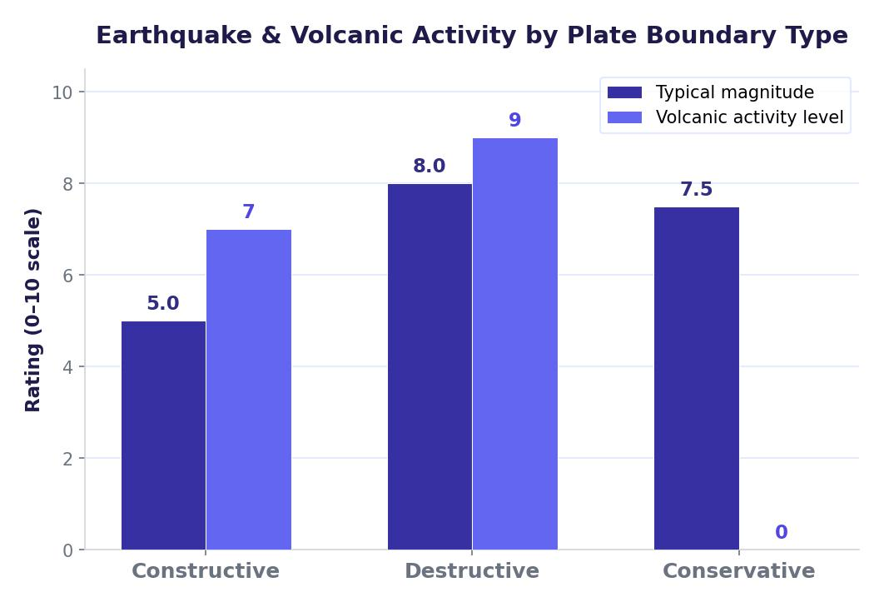

The Four Types of Plate Boundary
Where tectonic plates meet, the boundary between them is called a plate boundary (or plate margin). The type of boundary depends on the direction the plates are moving. There are four types, and each produces different tectonic hazards.
The four plate boundaries are: constructive (plates move apart), destructive (plates move together, one sinks), conservative (plates slide past each other), and collision (two continental plates push together).

Constructive Plate Boundary
At a constructive plate boundary, tectonic plates move away from each other. As they separate, magma rises from the mantle to fill the gap, cooling to form new crust. This process creates shield volcanoes — wide, gently sloping volcanoes made from runny basaltic lava. Occasional small earthquakes also occur as the plates pull apart.
A key example is the Mid-Atlantic Ridge, which runs down the centre of the Atlantic Ocean. Iceland sits directly on this ridge, which is why it has frequent volcanic activity.
Destructive Plate Boundary
At a destructive plate boundary, plates move towards each other. Because oceanic crust is denser than continental crust, the oceanic plate is forced beneath the continental plate in a process called subduction. The area where this happens is called a subduction zone.
As the oceanic plate sinks into the mantle, it melts and the pressure forces magma upwards, creating composite volcanoes — steep, explosive volcanoes made of alternating layers of ash and lava. Strong earthquakes and tsunamis are also common at destructive boundaries.
The western coast of South America is a classic destructive boundary. The Nazca Plate (oceanic) is being subducted beneath the South American Plate (continental), creating the Andes mountain range and volcanoes such as Cotopaxi in Ecuador. Japan is another example, sitting where the Pacific Plate subducts beneath the Eurasian Plate, leading to frequent earthquakes and volcanic eruptions.
Conservative Plate Boundary
At a conservative plate boundary, two plates slide past each other. They can move in opposite directions, or in the same direction at different speeds. No magma reaches the surface, so no volcanoes form. However, the friction between the plates builds up pressure, and when that pressure is released it causes frequent, often powerful earthquakes.
The most famous example is the San Andreas Fault in California, where the Pacific Plate slides past the North American Plate. Both plates move northwards, but the Pacific Plate moves faster (30–50 mm per year). Major cities like Los Angeles and San Francisco sit directly on this fault line.
Collision Plate Boundary
At a collision plate boundary, two plates made of continental crust move towards each other. Because both plates have the same density, neither can be subducted. Instead, the land between them is forced upwards, creating fold mountains. Strong earthquakes are common, but there are no volcanoes because no plate is being melted in the mantle.
The Himalayas were formed by the collision of the Indian Plate and the Eurasian Plate. This collision is still happening today, which is why the Himalayas continue to grow by about 1 cm per year and why the region experiences frequent earthquakes.
Why Do People Live Near Tectonic Hazards?
It is estimated that around 750 million people live within 60 miles of an active or dormant volcano. Millions more live along major fault lines. There are several reasons why people choose to stay in areas at risk from tectonic hazards.
Historical Settlement
Many settlements near plate boundaries have existed for hundreds or even thousands of years. Cities like Los Angeles and San Francisco on the San Andreas Fault were established long before people understood plate tectonics. Over time these settlements have grown into major cities with millions of residents. People are attached to their homes, families and communities, and do not want to leave.
Fertile Soil
Volcanic eruptions deposit ash over the surrounding land. Over time this ash breaks down into extremely fertile soil, which is ideal for growing crops. In poorer countries especially, people are attracted to volcanic areas because the rich soil allows them to grow food to feed their families and to sell commercially. For example, rice paddies surround Mount Agung in Bali, Indonesia, despite the volcano’s history of major eruptions.
Mining and Minerals
Volcanic eruptions bring valuable minerals to the surface, including sulphur, zinc and precious metals. Mining these minerals provides jobs and income for local communities. At Mount Ijen in East Java, Indonesia, workers mine sulphur from inside the active volcano’s crater — a dangerous but economically important activity.
Tourism and Employment
Volcanoes and tectonic landscapes attract thousands of tourists each year. Adventure tourism, sightseeing and geothermal spas create jobs in hospitality, transport and guiding. In Iceland, geothermal energy from volcanic activity heats homes and powers industry, making it a practical advantage to live near tectonic activity.
Trust in Prediction and Protection
Many people trust that scientists can predict eruptions and earthquakes in time for evacuations. They also have confidence in modern engineering — earthquake-resistant buildings, early warning systems and well-rehearsed emergency plans. This sense of security encourages people to stay, especially in wealthier countries where these measures are well-funded.
Tectonic hazards frequently occur along coastlines, which is also where many large human settlements developed — originally for access to food, trade and transport. People settled in these areas before the science of plate tectonics was understood, and the settlements are now too large and established to relocate.